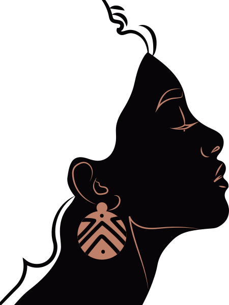

Conheça
seus Direitos

Os cidadãos devem saber dos seus direitos e deveres para poderem reclamar quando necessário porque, se existem direitos, na contrapartida há deveres e obrigações que descumpridos podem gerar indenização possível de penalizar e assim educar cidadãos, empresas e o próprio Estado a buscar funcionar melhor, de acordo com a própria Lei Maior, a sua Constituição Federal.

Lei da igualdade racial
Promulgada durante o segundo governo Lula, em 2010, a lei 12.288 instituiu o Estatuto da Igualdade Racial.
Sua função é garantir à população negra a efetivação da igualdade de oportunidades, a defesa dos direitos étnicos individuais, coletivos e difusos e o combate à discriminação e às demais formas de intolerância étnica.
Para isso, determina que a igualdade no país será promovida por meio de políticas públicas de desenvolvimento econômico e social, modificação das estruturas institucionais do Estado para o adequado enfrentamento e a superação das desigualdades étnicas decorrentes do preconceito.
Além disso, propõe a eliminação dos obstáculos históricos, socioculturais e institucionais que impedem a representação da diversidade étnica nas esferas pública e privada.
O Sistema tem por objetivo incentivar a sociedade civil e a iniciativa privada a participar da articulação para fortalecer e ampliar a defesa dos direitos da população negra. Por meio desses sistema, foram criadas as Ouvidorias Permanentes, garantindo acesso à Justiça e à Segurança.
Abordagens Policiais - Direitos, deveres e dicas de compartamento
Atenção: O Policial Militar ao realizar uma abordagem sempre estará com a sua arma em punho (pronto para usá-la). É o procedimento correto para garantir a própria segurança e a de terceiros.
¿O que é uma Abordagem Policial Militar?

É o ato de uma Guarnição Policial Militar aproximar-se e interpelar pessoa que apresente conduta suspeita, a fim de identificá-la e/ou proceder à busca, de cuja ação poderá resultar a prisão, a apreensão de pessoa ou coisa ou uma simples advertência ou orientação. É uma das principais atividades realizadas pelos Policiais Militares em seu trabalho diário, visando a prevenção de crimes e contravenções.
¿O que fazer quando for abordado pela Polícia Militar?
- Fique calmo, não tente fugir e colabore com o Policial Militar;
- Atenda às ordens do Policial Militar;
- Deixe suas mãos visíveis e não faça nenhum movimento brusco;
- Não discuta com o Policial Militar nem toque nele. Não faça ameaças (do tipo: “Você sabe com quem está falando?”) e não use de palavras defensivas (por exemplo: “Sou trabalhador, não sou bandido”).
¿Quais são os direitos do cidadão abordado?
- Saber a identificação do Policial Militar, se assim desejar;
- Ser revistado por Policiais Militares do mesmo sexo, desde que não ocasione prejuízo ao andamento da ocorrência (art. 249 do Código de Processo Penal)
- Acompanhar visualmente a revista realizada no seu veículo;
- Ao término da abordagem, saber o motivo pelo qual foi abordado;
- De ser preso, apenas por ordem judicial ou flagrante delito;
- Ao ser preso, quando for entregue na Delegacia de Polícia realizar contato com advogado e/ou alguém da família.
O que fazer se o Policial Militar desrespeitar seus direitos ou, de alguma forma, você se sentir prejudicado em função da atuação da PM?
Anote o nome do Policial Militar, o número da viatura PM, o dia, horário e local em que ocorreu o fato e se dirija até a Corregedoria de Polícia Militar para que seja formalizada a denúncia. Se houver testemunhas do fato, leve consigo dados para que estas pessoas possam ser ouvidas no decorrer do procedimento interno de apuração, instaurado para averiguar a situação denunciada.
Amparo legal:
Art. 244 do CPP – A busca pessoal independerá de mandado, no caso de prisão ou quando houver fundada suspeita de que a pessoa esteja na posse de arma proibida ou de objetos ou papéis que constituam corpo de delitou, ou quando a medida for determinada no curso de busca domiciliar.
Dicas: Aconselha-se não exigir do Policial Militar a identificação no “calor da emoção” ou durante a ação Policial. Espere alguns instantes até que seja concluída a abordagem por parte da PM.- As interjeições para dirigir-se a um representante do BPM em ação podem ser “policial” ou “soldado”.
Cotas Raciais
Desde agosto de 2012, o Brasil conta com o sistema de cotas raciais regulamentado por meio da Lei n° 12.711. O objetivo da ação foi democratizar o acesso ao ensino superior nas universidades públicas e às vagas de serviço público para diminuir a desigualdade social do país. Além disso, a lei foi o início de uma reparação histórica com a população negra, que por mais de três séculos foi escravizada, sem que houvesse nenhuma ação de reintrodução social.
Na Universidade
Para se inscrever em universidades brasileiras e usufruir das vagas destinadas às cotas, o estudante deve assinar um termo onde se autodeclara como preto ou parto, que passa a ter validade legal para o uso dessa política afirmativa. A lei prevê 50% das vagas, em cada curso e turno, em todas as universidades e institutos federais. Podem concorrer a essas cotas estudantes pretos, pardos, indígenas e provenientes do Ensino Médio cursado em escolas públicas ou na rede particular com bolsa integral. Nas universidades particulares, o sistema de cotas também é aplicado no Programa Universidade para Todos (Prouni), garantindo os 50% das vagas destinadas para essa política afirmativa.
Como entrar na faculdade por meio do sistema de cotas?
- Fazer a prova do Enem (Exame Nacional do Ensino Médio);
- Cumprir os pré-requisitos estabelecidos para o direito às cotas;
- Especificar no momento da inscrição que quer concorrer às cotas;
- Entregar os documentos comprobatórios.
Para ingressar em um curso superior, seja na rede pública ou privada, o estudante deve seguir os passos abaixos:
Seja pelo Sisu (Sistema de Seleção Unificada) ou pelo Prouni, o estudante deve deixar bem claro que quer concorrer às vagas destinadas no momento de inscrição. Cada universidade, instituto ou faculdade possui requisitos próprios para comprovação do candidato, como comprovante de renda, histórico escolar, comprovante de residência, entre outros. Por isso, no momento de sua inscrição, é muito importante prestar bastante atenção aos requisitos exigidos pelo curso que você está se candidatando. Embora algumas pessoas continuem desfavoráveis às cotas, por meio de dados, podemos comprovar que, de fato, elas foram um passo inicial para a democratização do acesso ao ensino superior no Brasil.
No concurso público
- Em primeiro lugar, a desequiparação promovida pela política de ação afirmativa em questão está em consonância com o princípio da isonomia. Ela se funda na necessidade de superar o racismo estrutural e institucional ainda existente na sociedade brasileira, e garantir a igualdade material entre os cidadãos, por meio da distribuição mais equitativa de bens sociais e da promoção do reconhecimento da população afrodescendente.
- Em segundo lugar, não há violação aos princípios do concurso público e da eficiência. A reserva de vagas para negros não os isenta da aprovação no concurso público. Como qualquer outro candidato, o beneficiário da política deve alcançar a nota necessária para que seja considerado apto a exercer, de forma adequada e eficiente, o cargo em questão. Além disso, a incorporação do fator “raça” como critério de seleção, ao invés de afetar o princípio da eficiência, contribui para sua realização em maior extensão, criando uma “burocracia representativa”, capaz de garantir que os pontos de vista e interesses de toda a população sejam considerados na tomada de decisões estatais.
- Em terceiro lugar, a medida observa o princípio da proporcionalidade em seu tríplice dimensão. A existência de uma política de cotas para o acesso de negros à educação superior não torna a reserva de vagas nos quadros da administração pública desnecessária ou desproporcional em sentido estrito. Isso porque: (i) nem todos os cargos e empregos públicos exigem curso superior; (ii) ainda quando haja essa exigência, os beneficiários da ação afirmativa no serviço público podem não ter sido beneficiários das cotas nas universidades públicas; e (iii) mesmo que o concorrente tenha ingressado em curso de ensino superior por meio de cotas, há outros fatores que impedem os negros de competir em pé de igualdade nos concursos públicos, justificando a política de ação afirmativa instituída pela Lei n° 12.990/2014. Ademais, a fim de garantir a efetividade da política em questão, também é constitucional a instituição de mecanismos para evitar fraudes pelos candidatos. É legítima a utilização, além da autodeclaração, de critérios subsidiários de heteroidentificação (e.g., a exigência de autodeclaração presencial perante a comissão do concurso), desde que respeitada a dignidade da pessoa humana e garantidos o contraditório e a ampla defesa.
- Por fim, a administração pública deve atentar para os seguintes parâmetros: (i) os percentuais de reserva de vaga devem valer para todas as fases dos concursos; (ii) a reserva deve ser aplicada em todas as vagas oferecidas no concurso público (não apenas no edital de abertura); (iii) os concursos não podem fracionar as vagas de acordo com a especialização exigida para burlar a política de ação afirmativa, que só se aplica em concursos com mais de duas vagas; e (iv) a ordem classificatória obtida a partir da aplicação dos critérios de alternância e proporcionalidade na nomeação dos candidatos aprovados deve produzir efeitos durante toda a carreira funcional do beneficiário da reserva de vagas.
- Procedência do pedido, para fins de declarar a integral constitucionalidade da Lei n° 12.990/2014. Tese de julgamento: “É constitucional a reserva de 20% das vagas oferecidas nos concursos públicos para provimento de cargos efetivos e empregos públicos no âmbito da administração pública direta e indireta. É legítima a utilização, além da autodeclaração, de critérios subsidiários de heteroidentificação, desde que respeitada a dignidade da pessoa humana e garantidos o contraditório e a ampla defesa”.
É constitucional a Lei n° 12.990/2014, que reserva a pessoas negras 20% das vagas oferecidas nos concursos públicos para provimento de cargos efetivos e empregos públicos no âmbito da administração pública federal direta e indireta, por três fundamentos.
Política Nacional de Saúde Integral da População Negra
A desigualdade de raça é estruturante da desigualdade social brasileira. Inúmeras são as evidências que apontam as barreiras à participação igualitária dos negros em diversos campos da vida social e para as consequências que estas desigualdades e discriminações produzem não apenas para os negros, mas para a sociedade como um todo. O racismo e o racismo institucional são práticas que colocam pessoas de grupos raciais ou étnicos em situação de desvantagem no acesso aos benefícios gerados pela ação das instituições e organizações, como, por exemplo, na morosidade da implementação de políticas públicas.
No caso da saúde, a redução das desigualdades sociais é um dos objetivos do Pacto pela Saúde, que considera como causas determinantes e condicionantes de saúde: modos de vida, trabalho, habitação, ambiente, educação, lazer, cultura, acesso a bens e serviços essenciais, entre outros. Nesse sentido, podemos afirmar que o racismo é o principal determinante social em saúde para população negra, já que incide negativamente sobre todos esses fatores que compõem o conceito de saúde.
O Ministério da Saúde compreende a situação de iniquidade e vulnerabilidade que afeta a saúde da população negra – precocidade dos óbitos, altas taxas de mortalidade materna e infantil, maior prevalência de doenças crônicas e infecciosas e altos índices de violência – e reconhece que o racismo vivenciado pela população negra incide negativamente nesses indicadores, comprometendo o acesso dessa população aos serviços públicos de saúde, já que a boa qualidade da saúde gera condições para a inserção dos sujeitos nas diferentes esferas da sociedade de maneira digna, promovendo sua autonomia e cidadania.
Por isso, em consonância com o Participa SUS, o Ministério da Saúde instituiu, 2009, a Política Nacional de Saúde Integral da População Negra.
Essa Política tem como marca: o reconhecimento do racismo, das desigualdades étnico-raciais e do racismo institucional como determinantes sociais das condições de saúde, com vistas à promoção da equidade em saúde. Seu objetivo é promover a saúde integral da população negra, priorizando a redução das desigualdades étnico-raciais, o combate ao racismo e à discriminação nas instituições e nos serviços do SUS.
Doenças Genéticas ou Hereditárias mais comuns da População Negra
Anemia falciforme
Doença hereditária, decorrente de uma mutação genética ocorrida há milhares de anos, no continente africano. A doença, que chegou ao Brasil pelo tráfico de escravos, é causada por um gene recessivo, que pode ser encontrado em frequências que variam de 2% a 6% na população brasileira em geral, e de 6% a 10% na população negra.
Diabetes mellitus (tipo II)
Esse tipo de diabetes se desenvolve na fase adulta e evolui causando danos em todo o organismo. É a quarta causa de morte e a principal causa de cegueira adquirida no Brasil. Essa doença atinge com mais frequência os homens negros (9% a mais que os homens brancos) e as mulheres negras (em torno de 50% a mais do que as mulheres brancas).
Hipertensão arterial
A doença, que atinge 10% a 20% dos adultos, é a causa direta ou indireta de 12% a 14% de todos os óbitos no Brasil. Em geral, a hipertensão é mais alta entre os homens e tende ser mais complicada em negros, de ambos os sexos. Deficiência de glicose-6-fosfato desidrogenase — Afeta mais de 200 milhões de pessoas no mundo. Apresenta frequência relativamente alta em negros americanos (13%) e populações do Mediterrâneo, como na Itália e no Oriente Médio (5% a 40%). A falta dessa enzima resulta na destruição dos glóbulos vermelhos, levando à anemia hemolítica e, por ser um distúrbio genético ligado ao cromossomo X, é mais frequente nos meninos.
Além da criação da própria PNSIPN, é possível identificar outros avanços nas ações voltadas à saúde da população negra, com destaque para:
- Plano Juventude Viva – Prevê ações de prevenção para reduzir a vulnerabilidade de jovens negros a situações de violência física e simbólica.
- Portaria nº 1.391, de 16 de agosto de 2005, que institui, no âmbito do SUS, as diretrizes para a Política Nacional de Atenção Integral às Pessoas com Doença Falciforme e outras Hemoglobinopatias.
- Incorporação do transplante de medula para tratamento da doença falciforme no âmbito do SUS (Portaria SCTIE n° 30, de 30 de junho de 2015).
- Curso de ensino a distância sobre saúde da população negra promovido pelo MS e Universidade Aberta do SUS (UNA-SUS), lançada em 27 de outubro de 2014).
- Comitê Técnico de Saúde da População Negra – Instituído no âmbito do Ministério da Saúde, é um espaço consultivo de participação e controle social, com representantes da gestão, pesquisadores e movimentos negros.
- Publicação da Portaria nº 344, de 1º de fevereiro de 2017, que padroniza e torna obrigatória a coleta e o preenchimento do quesito raça/cor do paciente em todos os sistemas de informação do SUS, conforme a classificação do IBGE, que define cinco categorias autodeclaradas: branca, preta, amarela, parda e indígena.
- Publicação, em 30 de março de 2017, do III Plano Operativo da 25 Política Nacional de Saúde Integral da População Negra (Resolução nº 16, de 30 de março de 2017). O III Plano Operativo foi pactuado e aprovado na Comissão Inter gestores Tripartite (CIT) – foro permanente de negociação e articulação das esferas de gestão do Sistema Único de Saúde (SUS). Com vigência para o triênio 2017- 2019, o III Plano Operativo estabelece ações de implementação da referida política para as gestões federal, estadual e municipal do SUS. h) Publicação da Portaria nº 142, de 21 de julho de 2017, que institui o Grupo de Trabalho de Políticas Públicas da Igualdade Racial e dá outras providências. Conforme o art. 1°, fica instituído o Grupo de Trabalho de Políticas Públicas da Igualdade Racial com a finalidade de explanar aos órgãos e às entidades governamentais e não governamentais dos estados e municípios as ações de promoção da igualdade racial das políticas públicas federais, assim como de propor metas e prioridades aplicáveis à realidade local.